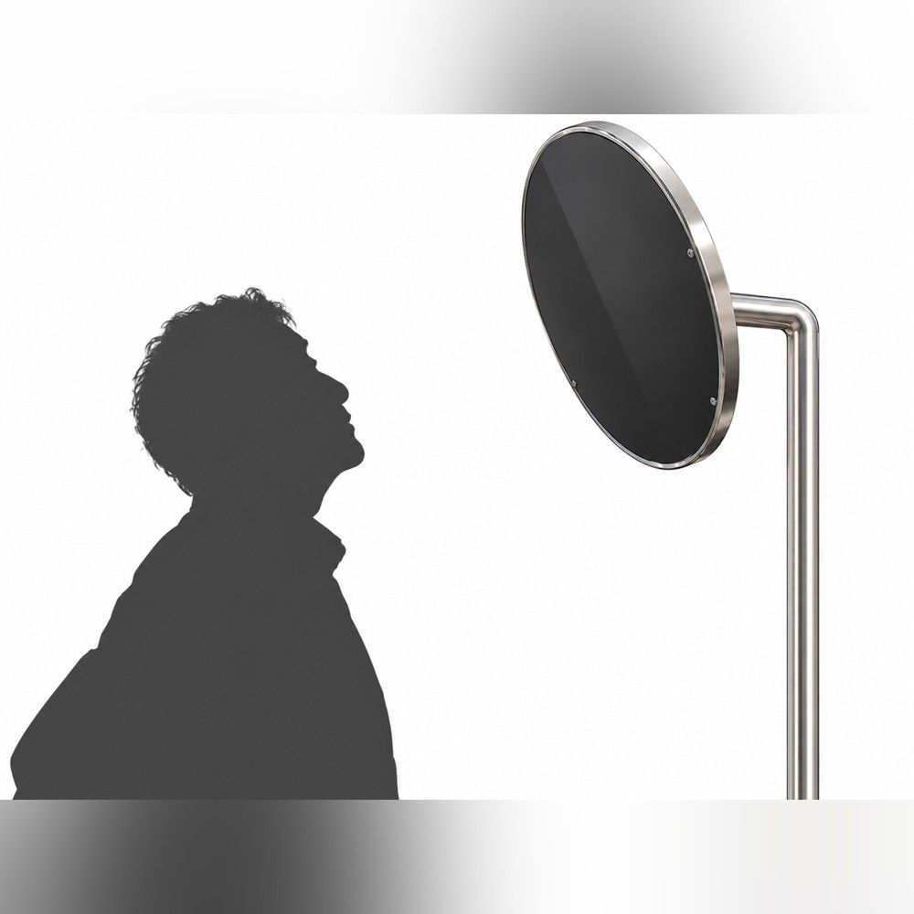
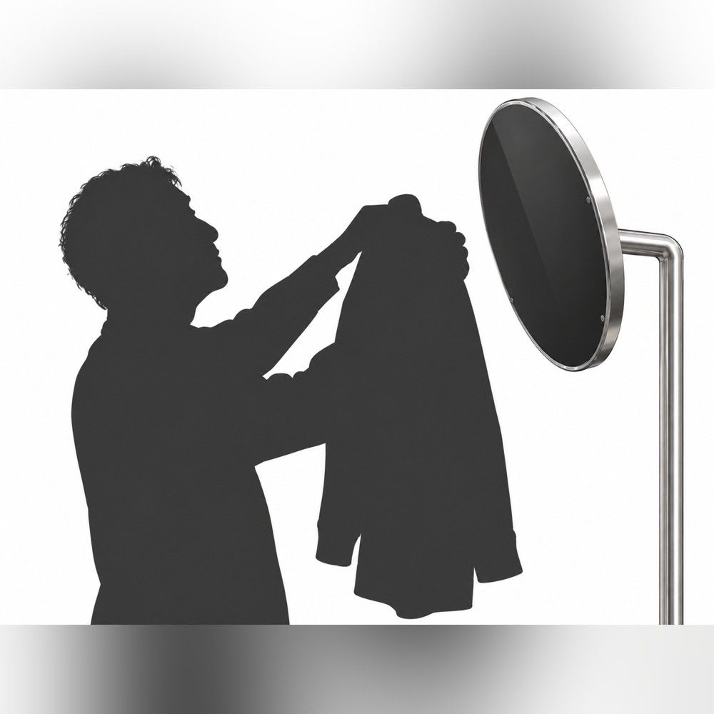
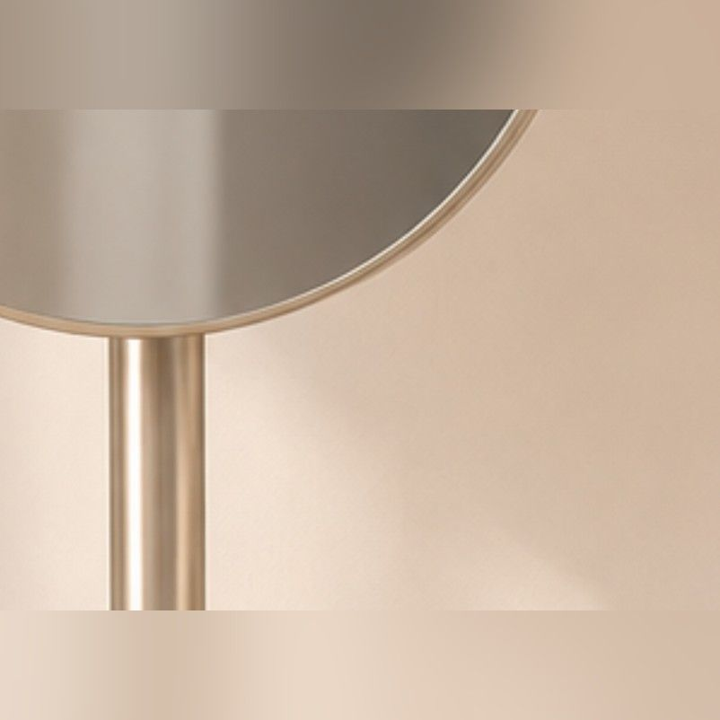
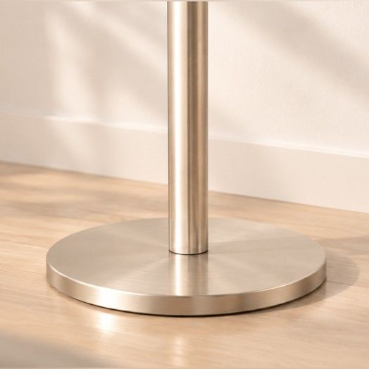

사용자 자동 인식 및 실행
거울 앞에 서면 별도의 조작 없이 사용자를 인식하고 시스템이 실행됩니다.
smart ai mirror은 사용자의 편의를 최우선으로 합니다
Scroll to Explore
거울 앞에 서면 별도의 조작 없이 사용자를 인식하고 시스템이 실행됩니다.

입고 싶은 옷을 렌즈에 비추면 AI가 의류의 형태와 특징을 분석하고, 체형을 스캔해 착의 데이터를 추출합니다.

의류 데이터와 체형 정보를 결합해 딥페이크 기반 AI로 옷을 합성합니다. 갈아입지 않아도 착용 모습을 실시간으로 확인합니다.
입지 않아도, 입은 모습을 거울이 보여줍니다
딥페이크 기술로 시장 한복판에서도 착의 서비스를 제공합니다.

smart ai mirror의 크기와 소재, 컬러, 핵심 기술을 소개합니다.